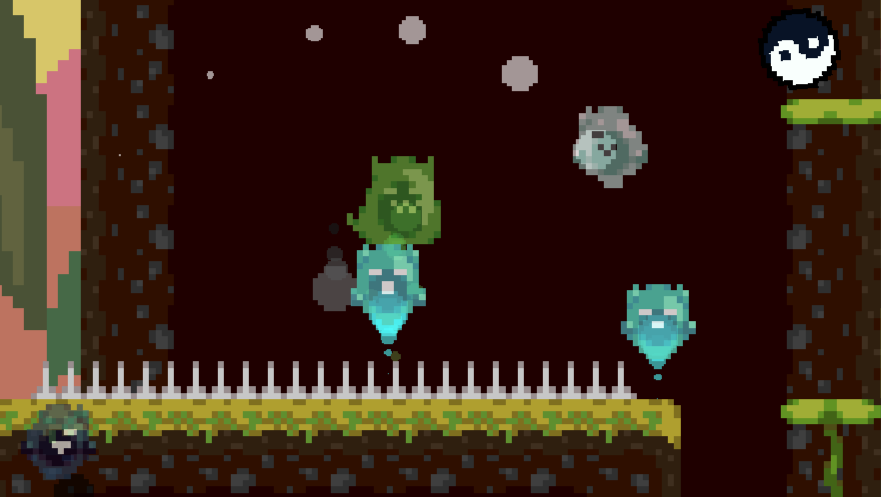

Slime Lives was our team of 3's game jam entry for Jamsepticeye 2025.
Our Project Goal
The theme of Jamsepticeye 2025 was "Death is an Opportunity", and my immediate thought was to go simple and effective. Streamlining the idea phase allowed us to start working much faster and expand on the concept in unique ways. Despite the concept not being the most original idea in the jam, my philosophy towards this decision was "If we're going simple, we need to be the best."
Jumping between platforms left behind upon death.
Slime Lives is a platformer where the main way to progress is through death. You play as a cat slime with 9 lives, making your way back up the mountain to the witch who kicked you out of her spire.
System Design - Held Items
While creating platforms upon death was the main mechanic of our game, I thought that we would need more unique ways to interact with the platforms themselves. This is where the held item system comes into play.
Held items are a type of powerup that can be carried while platforming and can affect the platform that you spawn upon death. These extra types of platforms allowed us to change the way that you interact with certain parts of the level. Additionally, the single-use nature of held items allowed us to lean towards more puzzle-based level design.
The slime cat next to a crucifix item and a checkpoint.
The slime cat next to a tao item and its rotating platform.
Wind mechanics blowing upwards, granting the player increased jump height.
System Design - Wind
Another way we thought of influencing the somewhat static nature of the platforms was through introducing wind mechanics. Directional wind allowed us to change movement from both the player side and through the platforms, forcing players to make more intentional decisions about where to spawn a platform at.